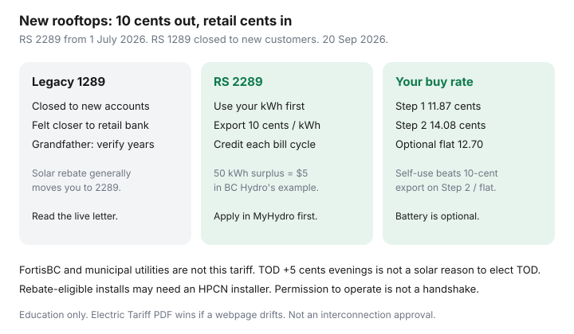

Utilities · Canada
BC Hydro self-generation and solar: what households need to know after rate updates
B.C. solar blogs still teach Rate Schedule 1289 as if you can bank mid-day kWh at retail until spring. For new customers that door closed. Effective 1 July 2026, new self-generation uses Rate Schedule 2289: you use your own power first, and exports earn a posted 10¢/kWh each billing cycle. That is net billing, not old net metering.
This is BC Hydro–specific literacy with verify-at-draft discipline. Canada-wide credit machines live in how net metering works. Quote hygiene lives in comparing solar quotes. Your residential ¢ (Step 1 / Step 2 / flat / time-of-day) is still the tiered-rate guide.
Disclosure: There is no natural affiliate product in a BC Hydro tariff explainer. Saving Optimizer does not claim BC Hydro, BCUC, or installer partnerships. This is education — not an interconnection approval or a rebate decision.
Key takeaways
- RS 1289 (legacy net metering) is closed to new customers. RS 2289 self-generation applies from 1 July 2026 (BCUC decision; BC Hydro customer-generation pages used 20 Sep 2026).
- Exports: 10¢/kWh credited each billing cycle. BC Hydro’s example: 50 kWh surplus → $5. You still pay the residential energy rate (tiered 11.87 / 14.08 ¢ or optional flat 12.70 ¢) plus the daily basic for what you buy.
- Self-use is worth more than export when your retail ¢ is above 10¢ — which Step 2 (14.08 ¢) and flat (12.70 ¢) both are. Oversizing to dump kWh at 10¢ is a different business than offsetting a January heat bill.
- Solar rebate (up to $5,000 residential on the pages we have used) generally moves you to RS 2289. Battery-only rebate language has been treated separately — read the live terms. Grandfather windows for 1289 veterans are on the customer-generation page and the BCUC order; confirm 10- vs 20-year language the week you decide.
- Apply in MyHydro before installation. From 1 June 2026, rebate-eligible solar/battery work has used HPCN installer rules — verify live.
Legacy net metering vs newer self-generation rate frameworks (verify dates)
Old RS 1289 behaved like classic net metering for many households: surplus could offset later consumption in a way that felt close to retail. BCUC closed that schedule to new customers and approved RS 2289 as a self-generation / net-billing rate with a posted energy price of 10¢/kWh, held for a defined period in the order (five years at that price in the decision text we reviewed — confirm if BCUC later changes it).
Effective date on BC Hydro’s customer pages: 1 July 2026. If a salesperson is still quoting “1:1 net metering for new BC Hydro rooftop,” they are selling a 2024 blog. FortisBC and municipal utilities are not this tariff.

Export credit mechanics at a homeowner level
Two meters in spirit (often one bidirectional register): kWh you buy from BC Hydro, and kWh you send out. Under RS 2289, surplus in a billing cycle becomes a dollar generation credit at 10¢. That credit applies to your bill. It is not a kWh bank that waits for November baseboards at Step 2. If you export 200 kWh and import 800 kWh in the same cycle, you bought 800 at your residential ¢ and sold 200 at 10¢ — you did not “net” 600 kWh at retail.
Export capacity language on the self-generation pages: up to 100 kW per phase back to the grid. Household rooftops sit far below that. Community generation (RS 2290) is a different product.
Interconnection steps and timelines
- MyHydro application for customer generation before you buy, or at least before you install. Paperwork after a roof tear-off is how projects stall.
- Technical review: panel, inverter, protection, and whether the local feeder can take the export.
- Permission to operate — not the installer’s handshake. Do not energize export until BC Hydro says so.
- Rebate pre-approval, if you want one, is a parallel file with its own installer network rules.
Timelines move with volume. Get the current estimate in writing from BC Hydro and the installer. A quote that says “the utility always takes two weeks” is a hope.
How Step 1 / Step 2 consumption interacts with generation
| kWh fate | Value sketch | Household implication |
|---|---|---|
| Export on RS 2289 | 10¢ credited that billing cycle | 50 kWh surplus → $5 in BC Hydro’s example |
| Self-use on Step 1 | Avoids 11.87 ¢ (plus some of the rider story) | Still usually beats a 10¢ export |
| Self-use on Step 2 | Avoids 14.08 ¢ | Interior electric-heat houses get more from noon-hour self-use |
| Self-use on optional flat | Avoids 12.70 ¢ | Do not size an array to dump July surplus at 10¢ |
| Buy on time-of-day overlay | −5 ¢ 11 p.m.–7 a.m.; +5 ¢ 4–9 p.m. | Midday solar export is not the +5 ¢ evening window |
Tiered RS 1101 (used 20 Sep 2026): 11.87 ¢ up to 22.1918 kWh/day, then 14.08 ¢; daily basic 23.44 ¢. Optional flat RS 1151: 12.70 ¢ all kWh; basic 25.00 ¢. Optional time-of-day: −5 ¢ 11 p.m.–7 a.m., +5 ¢ 4–9 p.m.
Self-consumed solar avoids whatever ¢ you would have paid in that hour — 11.87, 14.08, or 12.70, plus some of the story of riders — and is usually worth more than a 10¢ export. Interior electric-heat houses that live on Step 2 get more value from noon-hour self-use (and from a battery that shifts solar into the evening) than from a giant array that dumps July surplus at 10¢. Lower Mainland gas-heat condos may never see Step 2; their solar case is weaker unless a rebate is large. Run 12 months in Account Online, not a January screenshot.
Time-of-day + solar: midday export is not in the +5 ¢ evening window. Do not buy TOD because a solar deck said “peak.” TOD is an EV-overnight conversation for most condos.
Battery storage: optional vs required narratives
RS 2289 does not require a battery. Sales decks that say “you must buy storage now that net metering is dead” are selling storage. A battery can raise self-use and may unlock a separate rebate (pages we have used: up to $1,500 residential — verify live) and a Peak Saver seasonal credit. It also adds inverters, fire-code questions, and a replacement cycle. Price it as a second project with its own payback, not as a mandatory RS 2289 fee.
If you only accepted a battery rebate, BC Hydro’s rate-update pages have said that alone does not force the same RS 2289 transition as the solar rebate — read the letter they sent and the current terms.
Installer checklist for BC Hydro paperwork
- Which rate schedule will I be on the day after permission to operate — 2289, or a documented 1289 grandfather?
- If I take the solar rebate, do I give up 1289 forever? (Terms we have seen: yes.)
- Who files MyHydro? Who pays if the application is incomplete?
- HPCN / network installer status if a rebate is in the quote.
- Production estimate using a B.C. weather file, snow, and shade — not Phoenix.
- What happens to unused 10¢ credits if I sell the house?
- Panel ampacity, roof years left, and who climbs for a failed microinverter.
We used BC Hydro’s self-generation and rate-update pages and the site’s RS 1101 ¢ on 20 September 2026. Reload them the week you sign. The Electric Tariff PDF wins if a webpage drifts.
Sources & date stamps
- BC Hydro, Customer generation service rates updates — RS 1289 closed; RS 2289 from 1 Jul 2026; 10¢/kWh (used 20 Sep 2026).
- BC Hydro, Self-generation — net-billing example (50 kWh → $5); apply before install; rebate / HPCN notes.
- BCUC net-metering / self-generation decision (24 Mar 2026) — 10¢ energy price; grandfather and rebate-transition language to verify on the live customer page.
- BC Hydro residential rate pages — Step 1 / Step 2 / flat / TOD ¢ used in the tiered companion.
Frequently asked questions
Is net metering still available for new BC Hydro solar?
Not the old RS 1289 product. New customers use RS 2289 self-generation from 1 July 2026: 10¢/kWh exports credited each billing cycle. Existing 1289 customers should read the live grandfather rules.
Is 10 cents a good export price?
It is lower than Step 2 (14.08 ¢) and the optional flat rate (12.70 ¢). Self-consumed kWh are usually worth more than exported kWh. Do not size an array to dump summer surplus at 10¢.
Does taking the solar rebate change my rate?
BC Hydro’s pages say accepting the solar rebate puts you on RS 2289. Battery-only rebate language has been treated separately. Confirm the current terms before you click accept.
Do I need a battery?
No. RS 2289 does not require storage. A battery can raise self-use and may have its own rebate and Peak Saver credit. Price it as a second project.
When do I apply?
In MyHydro before installation. Permission to operate is not the installer’s handshake. Rebate paths may require a listed HPCN installer — verify live.